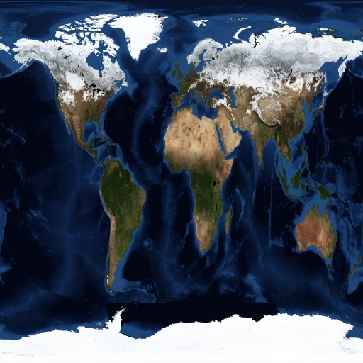

Oops ... your browser doesn't support the HTML5 canvas element
Rotation around x axis
Rotation around y axis
Rotation around z axis
How to create texture coordinates
Texture by inverse parametric form (Tetrahedron)
Spherical texture coordinates
Planar texture coordinates
Cylindrical texture coordinates
Diffuse Map
None
Checkerboard
Earth
Load Image
Bump Map
None
Load Image
